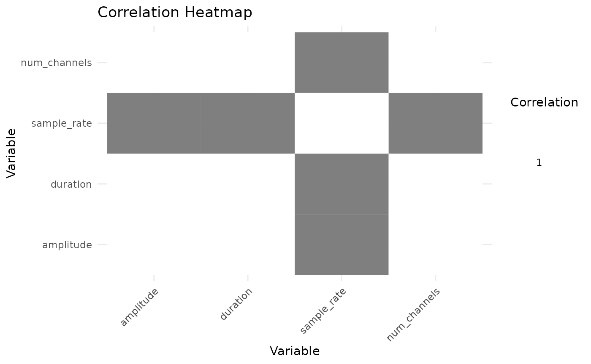

Manual
Svetlana Koroteeva
2023-10-20
Manual.RmdMusicFeatClassR package
Description
The MusicFeatClassR package aims to provide an end-to-end solution for music genre classification using Machine Learning (ML) techniques. The primary problem it addresses is automating the process of music genre classification, which involves extracting essential features from music datasets and training ML classifiers to predict the genre of music.
The MusicFeatClassR package consists of two main separate parts: feature extraction and classification.
Feature extraction
It also has specific data requirements. The music dataset consists of Dissemination Information Packages (DIP) extracted from a Library preservation system based on OAIS. Another important file is “ies_mms_label.txt,” which contains identification numbers and class labels extracted from the library system (Note: Collecting class labels from the library system is not yet implemented).
For preparation, place the music dataset in the “files/mp3” folder and the “ies_mms_label.txt” file in the “inst/csv” folder. You can find all code examples in the “inst/scripts” folder. Currently, only mp3 feature extraction is implemented.
Please note that the example dataset contains only 10 DIP folders. It is not sufficient for classification but serves as a test to ensure that feature extraction is working.
To initiate the feature extraction process, you can either run the “run_extraction.R” script or copy the following code snippet. This script will extract features from the music dataset, extract text metadata from “ie.xml” files (inside each DIP), and match them with labels from your “mms_ies_label.txt” file. It will create one metadata row for each music file, bind them to the main data frame, write the data frame to a CSV output file (“extracted_features.csv”), and return the data frame. Let’s get started.
Ensure that you have loaded all the necessary libraries.
library(xml2)
library(dplyr)
library(purrr)
library(tuneR)
library(data.table)
library(reshape2)
library(MusicFeatClassR) # the packageHere, you can customize the names of the output and input files, which contain labels. Before running the main pipeline, you should specify label_file_path, csv_file_path, and filesdir (for music packages).
csv_file_name<-"extracted_features.csv"
label_file<-"ies_mms_label.txt"
vignettes_dir<-getwd()
parent_dir<-dirname(vignettes_dir)
csv_files_path<-file.path(parent_dir, "inst","csv")
csv_file_path<- file.path(csv_files_path, csv_file_name)
label_file_path<-file.path(csv_files_path, label_file)
filesdir <- file.path(parent_dir,'files','mp3')Now you can initiate the pipeline. The entire process may take a couple of hours on the original dataset (please note that the example dataset only contains 10 albums). If the process is interrupted, the script will pick up from the last processed DIP folder in the next run.
mydata<-rpipeline(label_file_path, csv_file_path, filesdir)
#> character(0)
#> New names:
#> • `ie_number...2` -> `ie_number...3`
#> • `ie_number...18` -> `ie_number...19`
head(mydata)
#> $label_file_path
#> [1] "/home/runner/work/MusicFeatClassR/MusicFeatClassR/inst/csv/ies_mms_label.txt"
#>
#> $csv_file_path
#> [1] "/home/runner/work/MusicFeatClassR/MusicFeatClassR/inst/csv/extracted_features.csv"
#>
#> $root_dir
#> [1] "/home/runner/work/MusicFeatClassR/MusicFeatClassR/files/mp3"
#>
#> $feature_data
#> X file_type ie_number...3 rep_number file_name duration
#> 1 1 mp3 IE1017269 REP74080121 FL74080122_1212219_PM_S_1.mp3 309.912
#> 2 2 mp3 IE1017269 REP74080121 FL74080125_1212219_PM_S_2.mp3 338.808
#> sample_rate num_channels amplitude xml_title
#> 1 48000 14875776 14070 The Kini Quartet.
#> 2 48000 16262784 20921 The Kini Quartet.
#> xml_creators xml_type
#> 1 Kini Quartet.||Raggett, Margarette. Sound Recordings
#> 2 Kini Quartet.||Raggett, Margarette. Sound Recordings
#> xml_publisher xml_date xml_language xml_identifier
#> 1 Auckland, N.Z. : Zodiac, [1967] mao IE1017269
#> 2 Auckland, N.Z. : Zodiac, [1967] mao IE1017269
#> xml_bibliographicCitation mms ie_number...19 label_code
#> 1 The Kini Quartet. 9.912122e+15 IE1017269 pp
#> 2 The Kini Quartet. 9.912122e+15 IE1017269 pp
#> label1 label2 label3 label4 label5
#> 1 Popular music Songs, Māori. NA NA NA
#> 2 Popular music Songs, Māori. NA NA NAFor the purpose of data analysis, three S3 class methods for ‘rpipeline’ were developed: ‘print,’ ‘summary,’ and ‘plot.’
Currently, they are in a ‘draft’ stage and will be further developed for the complete package. (Note: To test the ‘plot’ S3 method, you need to load the ‘plot.rpipeline’ function into memory first, as it may not work well within the package.)
print(mydata)
#> Custom rpipeline object
#> Label File Path: /home/runner/work/MusicFeatClassR/MusicFeatClassR/inst/csv/ies_mms_label.txt
#> CSV File Path: /home/runner/work/MusicFeatClassR/MusicFeatClassR/inst/csv/extracted_features.csv
#> Root Directory: /home/runner/work/MusicFeatClassR/MusicFeatClassR/files/mp3
#> Feature Data Summary:
#> X file_type ie_number...3 rep_number file_name duration
#> 1 1 mp3 IE1017269 REP74080121 FL74080122_1212219_PM_S_1.mp3 309.912
#> 2 2 mp3 IE1017269 REP74080121 FL74080125_1212219_PM_S_2.mp3 338.808
#> sample_rate num_channels amplitude xml_title
#> 1 48000 14875776 14070 The Kini Quartet.
#> 2 48000 16262784 20921 The Kini Quartet.
#> xml_creators xml_type
#> 1 Kini Quartet.||Raggett, Margarette. Sound Recordings
#> 2 Kini Quartet.||Raggett, Margarette. Sound Recordings
#> xml_publisher xml_date xml_language xml_identifier
#> 1 Auckland, N.Z. : Zodiac, [1967] mao IE1017269
#> 2 Auckland, N.Z. : Zodiac, [1967] mao IE1017269
#> xml_bibliographicCitation mms ie_number...19 label_code
#> 1 The Kini Quartet. 9.912122e+15 IE1017269 pp
#> 2 The Kini Quartet. 9.912122e+15 IE1017269 pp
#> label1 label2 label3 label4 label5
#> 1 Popular music Songs, Māori. NA NA NA
#> 2 Popular music Songs, Māori. NA NA NA
summary(mydata)
#> Summary of rpipeline object
#> Label File Path: /home/runner/work/MusicFeatClassR/MusicFeatClassR/inst/csv/ies_mms_label.txt
#> CSV File Path: /home/runner/work/MusicFeatClassR/MusicFeatClassR/inst/csv/extracted_features.csv
#> Root Directory: /home/runner/work/MusicFeatClassR/MusicFeatClassR/files/mp3
#> Feature Data Summary:
#> X file_type ie_number...3 rep_number
#> Min. :1.00 Length:2 Length:2 Length:2
#> 1st Qu.:1.25 Class :character Class :character Class :character
#> Median :1.50 Mode :character Mode :character Mode :character
#> Mean :1.50
#> 3rd Qu.:1.75
#> Max. :2.00
#> file_name duration sample_rate num_channels
#> Length:2 Min. :309.9 Min. :48000 Min. :14875776
#> Class :character 1st Qu.:317.1 1st Qu.:48000 1st Qu.:15222528
#> Mode :character Median :324.4 Median :48000 Median :15569280
#> Mean :324.4 Mean :48000 Mean :15569280
#> 3rd Qu.:331.6 3rd Qu.:48000 3rd Qu.:15916032
#> Max. :338.8 Max. :48000 Max. :16262784
#> amplitude xml_title xml_creators xml_type
#> Min. :14070 Length:2 Length:2 Length:2
#> 1st Qu.:15783 Class :character Class :character Class :character
#> Median :17496 Mode :character Mode :character Mode :character
#> Mean :17496
#> 3rd Qu.:19208
#> Max. :20921
#> xml_publisher xml_date xml_language xml_identifier
#> Length:2 Length:2 Length:2 Length:2
#> Class :character Class :character Class :character Class :character
#> Mode :character Mode :character Mode :character Mode :character
#>
#>
#>
#> xml_bibliographicCitation mms ie_number...19
#> Length:2 Min. :9.912e+15 Length:2
#> Class :character 1st Qu.:9.912e+15 Class :character
#> Mode :character Median :9.912e+15 Mode :character
#> Mean :9.912e+15
#> 3rd Qu.:9.912e+15
#> Max. :9.912e+15
#> label_code label1 label2 label3
#> Length:2 Length:2 Length:2 Mode:logical
#> Class :character Class :character Class :character NA's:2
#> Mode :character Mode :character Mode :character
#>
#>
#>
#> label4 label5
#> Mode:logical Mode:logical
#> NA's:2 NA's:2
#>
#>
#>
#> Note: Currently “plot” does not load correctly, so I copied the script here
plot(mydata)
#> Warning in cor(df_numeric): the standard deviation is zero
Classification
Once you have collected all the features from your dataset, you can proceed to the next stage - Machine Learning (ML) classification. The source of classification is a dataframe built from the “extracted_features.csv” file; however, since the example music dataset is relatively small, please consider using the “extracted_features_original.csv” file, which contains more than 50,000 rows of data.
In addition to Random Forest, which is considered one of the best classifiers, the package also includes Naive Bayes, Support Vector Machine, and Logistic Regression methods. You can call the specific method by replacing “RandomForest” with “LogisticRegression,” “NaiveBayes,” or “SupportVectorMachine.”
To initiate the classification process, you can use the “classify.R” code from the “inst/scripts” directory or copy it from the code snippets.
library(randomForest)
library(caret)
library(data.table)
library(stringr)
library(e1071)
library(nnet)
library(Rcpp)
library(MusicFeatClassR)
csv_file_name<-"extracted_features_original.csv"
vignettes_dir<-getwd()
parent_dir<-dirname(vignettes_dir)
csv_files_path<-file.path(parent_dir, "inst","csv")
csv_file_path<-file.path(csv_files_path, csv_file_name)
feature_data<-read.csv(csv_file_path)
result <- train_classifier(feature_data, target_variable = "label_code",classif = "RandomForest")Class result also has print and summary methods
print(result)
#> $accuracy
#> [1] 0.7311828
#>
#> $confusion_matrix
#> Confusion Matrix and Statistics
#>
#> Reference
#> Prediction bl cy df fm jz pp rc sg uu zz
#> bl 11 0 0 0 0 1 1 0 0 0
#> cy 0 19 0 0 0 1 3 1 0 1
#> df 0 0 47 1 0 5 8 0 0 8
#> fm 0 0 0 33 0 3 2 4 2 3
#> jz 0 1 1 0 45 1 7 0 0 3
#> pp 1 4 9 1 0 129 23 4 0 11
#> rc 0 1 15 2 14 36 420 8 5 74
#> sg 0 1 0 1 0 1 1 8 0 3
#> uu 0 0 0 1 0 0 2 2 0 2
#> zz 1 1 15 6 15 47 116 10 10 648
#>
#> Overall Statistics
#>
#> Accuracy : 0.7312
#> 95% CI : (0.7104, 0.7512)
#> No Information Rate : 0.4048
#> P-Value [Acc > NIR] : < 2.2e-16
#>
#> Kappa : 0.615
#>
#> Mcnemar's Test P-Value : NA
#>
#> Statistics by Class:
#>
#> Class: bl Class: cy Class: df Class: fm Class: jz
#> Sensitivity 0.846154 0.70370 0.54023 0.73333 0.60811
#> Specificity 0.998917 0.99673 0.98759 0.99229 0.99272
#> Pos Pred Value 0.846154 0.76000 0.68116 0.70213 0.77586
#> Neg Pred Value 0.998917 0.99564 0.97767 0.99338 0.98391
#> Prevalence 0.006989 0.01452 0.04677 0.02419 0.03978
#> Detection Rate 0.005914 0.01022 0.02527 0.01774 0.02419
#> Detection Prevalence 0.006989 0.01344 0.03710 0.02527 0.03118
#> Balanced Accuracy 0.922536 0.85022 0.76391 0.86281 0.80041
#> Class: pp Class: rc Class: sg Class: uu Class: zz
#> Sensitivity 0.57589 0.7204 0.216216 0.000000 0.8606
#> Specificity 0.96760 0.8786 0.996160 0.996202 0.8004
#> Pos Pred Value 0.70879 0.7304 0.533333 0.000000 0.7457
#> Neg Pred Value 0.94338 0.8732 0.984282 0.990826 0.8940
#> Prevalence 0.12043 0.3134 0.019892 0.009140 0.4048
#> Detection Rate 0.06935 0.2258 0.004301 0.000000 0.3484
#> Detection Prevalence 0.09785 0.3091 0.008065 0.003763 0.4672
#> Balanced Accuracy 0.77175 0.7995 0.606188 0.498101 0.8305
#>
#> $trained_model
#>
#> Call:
#> randomForest(formula = train_target ~ ., data = train_data)
#> Type of random forest: classification
#> Number of trees: 500
#> No. of variables tried at each split: 2
#>
#> OOB estimate of error rate: 27.3%
#> Confusion matrix:
#> bl cy df fm jz pp rc sg uu zz class.error
#> bl 22 0 0 0 0 1 4 0 0 5 0.3125000
#> cy 0 27 1 1 0 9 9 4 0 12 0.5714286
#> df 0 0 85 3 9 11 42 1 1 52 0.5833333
#> fm 0 0 3 73 3 8 8 1 1 11 0.3240741
#> jz 0 0 5 1 133 5 18 1 0 12 0.2400000
#> pp 2 4 11 11 6 296 77 12 2 102 0.4340344
#> rc 2 4 13 5 12 57 1019 10 2 239 0.2523844
#> sg 0 4 0 3 3 24 23 17 1 14 0.8089888
#> uu 0 0 0 1 0 6 16 0 1 17 0.9756098
#> zz 6 11 14 3 11 23 183 5 8 1493 0.1502561
#>
#> attr(,"class")
#> [1] "train_classifier"
summary(result)
#> Length Class Mode
#> accuracy 1 -none- numeric
#> confusion_matrix 6 confusionMatrix list
#> trained_model 19 randomForest.formula list
plot(result)
RCPP code
The package also contains c++ method which build additional statistics using confusion matrix from results: Matthews correlation coefficient (MCC) and F1-score. The original script is in “src/get_metrics.cpp”. It is taking as input the table derived from confusion matrix. See example below.
#sourceCpp(parent_dir,"src","get_metrics.cpp")
classificationMetrics(result$confusion_matrix$table)
#> F1_Score MCC
#> NaN 0.5720885